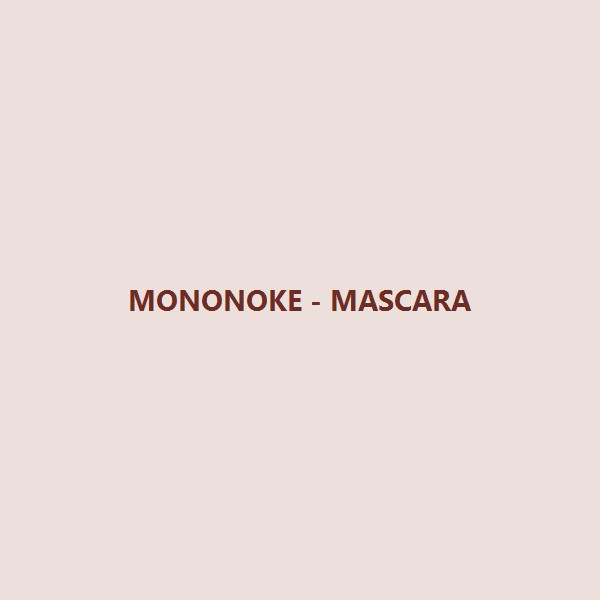

Productos Destacados
Nuestras piezas artesanales más pedidas por los fans de Totoro, Calcifer y Chihiro

Totoro
Amigurumi Totoro Guardián del Bosque
Muñeco tejido a mano en crochet con hilo de algodón hipoalergénico y hojita bordada.
$65.000 COP

Calcifer
Lámpara Artesanal Calcifer en Resina
Pequeña lámpara de escritorio moldeada y pintada a mano con luz cálida tipo fogata.
$85.000 COP

Sin Cara
Taza de Cerámica Sin Cara (Kaonashi)
Taza torneada en arcilla y esmaltada a mano en horno artesanal, capacidad de 350 ml.
$48.000 COP

Mononoke
Máscara Decorativa Princesa Mononoke
Escultura de pared tallada en madera liviana y pintada con acrílicos mates.
$92.000 COP